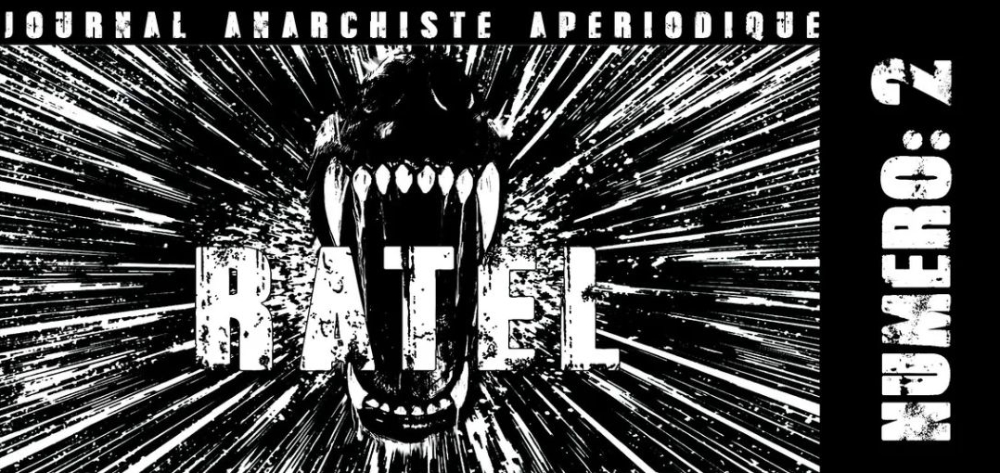

Ratel numéro 2

Edito
Après un été où les vagues de chaleurs se sont succédées les unes après les autres et où la canicule semble être devenue la nouvelle normalité estivale, faisant suite à une année où les luttes n’ont fait que refluer. On pouvait s’attendre à une rentrée où morosité et résignation se conjuguent pour paver la route de la période électorale. Dans cette séquence qui prône la délégation de sa volonté au moyen d’un bout de papier à glisser dans une urne, la gauche entend bien mettre tout en oeuvre pour étouffer tout ce qui pourrait entraver sa marche vers le pouvoir. Tout comme la droite bien sûr, mais lorsqu’on lutte les premiers adversaires auxquels on se confronte c’est bien la gauche et ses tentatives pour tout pacifier. Lutter contre les élections ne peut se faire en se contentant d’une posture abstentionniste qui de fait n’entraîne aucune conflictualité avec les curés du bulletin de vote. Cependant si elle ne peut se borner à l’abstention, elle ne peut pas non plus considérer qu’on peut s’opposer contre ceux qui appellent aux urnes tout en s’y rendant le moment venu. Cette position ne fait que reprendre en miroir celle qui est déployée à l’encontre de la religion qui verrait dans cette dernière une simple affaire privée. Ce serait faire fi de toute responsabilité de la part de ceux qui participent à faire exister la démocratie et ses principes, il serait dommage d’oublier, comme le résumait très bien la formule d’Albert Libertad que « Le criminel c’est l’électeur ». S’attaquer aux élections passe par l’attaque des principes de représentation, de délégation, de la démocratie et donc du pouvoir quel que soit la forme qu’il adopte. Cette lutte ne doit pas épargner les différentes institutions qui participent à faire vivre le jeu démocratique au quotidien et à ce titre partis et syndicats sont des cibles privilégiées. Au contraire des maîtres chanteurs antifascistes et démocrates, pour nous anarchistes et anti-autoritaires, la démocratie n’est qu’un mode de gestion de l’Etat, un autre outil à sa disposition, tout comme l’est la dictature. Nous sommes pour la destruction de tous les Etats quelles que soient leurs formes, pour une vie sans Etat, sans travail, ni patrie, ni famille, sans rien au dessus de nous que le putain de ciel au dessus de nos têtes !
Dans cette période où il semblait que rien ne pouvait bousculer la normalité mortifère du quotidien et que nous allions subir les appels aux votes de la gauche et ses relais. Le mouvement de révolte des lycéens et lycéennes est venu fracasser l’apathie et la morosité ambiante à la manière d’un pavé dans une vitrine. Et malgré les tentatives de la gauche qui comme à son habitude entend cadrer et récupérer le mouvement à son propre compte. Le refus de l’école qui est à la base de tout blocus (tout comme le refus du travail est à la base de toutes grèves) est démontré avec vigueur et force comme en témoignent les nombreux incendies et dégradations qui ont émaillé le mouvement. Qui en effet n’a jamais rêvé de mettre le feu à son lycée pour ne plus avoir à y foutre les pieds. Et en dépit des diverses condamnations venant aussi bien de la droite que de la gauche qui chacune à leur manière voit dans l’école un temple sacré à protéger, les attaques et blocus ont continué à s’amplifier. Bon nombre d’élèves ont instinctivement refuser un retour à la normale, où l’école les dépossède de la majorité de leurs temps, et ont donc entrepris de les détruire pour empêcher un tel retour. Et de la même manière qui n’a jamais eu envie de brûler son lieu de travail, et pour la même raison, la dépossession de la quasi intégralité de notre vie juste pour pouvoir manger et se loger. L’école n’est au final que le lieu qui nous prépare à notre vie future où on nous apprend à obéir, à être à l’heure, à rester à notre place, à se mettre en compétition les uns contre les autres, à balancer. En bref c’est ici qu’on nous inculque ce qui permet de faire tourner cette société : l’autorité et la servitude. L’école c’est l’antichambre du travail détruisons les deux !
Contre la fusion avec la gauche pour l'attaque contre l'existant !
Composition, léninisme, anti-impérialisme, logique identitaire, racialisme, lâcheté, fausses critiques, déconstruction, nationalisme, appétit pour le paraître… . Depuis plusieurs années maintenant, s’est effectuée une adhésion plus ou moins critique de la part de ceux qui se disent « révolutionnaires » à ces idéologies et aux pratiques qui leurs sont liées. Ce que l’on pouvait penser comme étant devenu l’apanage de la gauche et des quelques sectes maoïstes fossilisées, s’est étendu à ceux qui se représentaient comme luttant contre l’exploitation et toutes autorités. Ce « milieu » qui se prétend radical ou subversif tente de faire passer son confusionnisme pour quelque chose de foisonnant d’où partiraient des critiques et analyses présentées comme pertinentes puisque étant issues d’opinions diverses (voire contradictoires). On y voit pourtant l’effet inverse, avec un aplanissement des différentes conflictualités qui devraient s’y exercer et une absence de production écrite remplacée par une posture pseudo radicale bien confortable . Le sujet révolutionnaire qu’était le prolétaire ayant disparu, ces gauchistes sous vernis anarchiste ou anti-autoritaire sont donc en constante recherche d’un remplaçant à encadrer et présentent leurs diverses incuries militantes comme une réponse à de nouveaux enjeux propres à notre époque. Cependant ce tour de passe-passe fonctionne uniquement pour les personnes qui veulent bien se laisser abuser (certains tentent bien de faire passer cela pour de l’optimisme mais qu’ils soient idiots ou naïfs ils n’en restent pas moins complices de cet état de fait). S’ils étaient au moins francs avec eux mêmes, mais cela suppose qu’il faudrait qu’ils le soient avec les autres. Ils admettraient que c’est la peur de la répression (dans le sens où elle paralyse l’action) et surtout la volonté d’intégration qui sont à la fois le moteur et le carburant de cette adhésion aux diverses idéologies et pratiques gauchistes. Chaque individu intéressé par la destruction de l’Etat et du Capital peut remarquer que ce qui a été évacué par ce « milieu » prétendument anarchiste, anti-autoritaire ou autonome, c’est l’action directe et l’attaque contre l’existant. Ce qui se joue ici c’est la fusion de ce qui était appelé par l’Etat et les médias la mouvance « anarcho-autonome » ou « ultra-gauche » avec la gauche. En effet les critiques adressées à la gauche (extra-parlementaire ou non) par des anarchistes et anti-autoritaires lucides sur ces différentes dérives peuvent désormais se faire à l’encontre de ce qu’on nommera dans ce texte les aires subversives ou milieu.
Comment cette fusion a-t-elle pu s’opérer, est ce l’appétence pour le fonctionnement en organisation ou groupe politique qui placerait de fait la nécessité de leur survie au dessus des individus qui y participent, effaçant dans le même mouvement les différences parfois irréconciliables qui existent en leur sein ? Ou peut-être est-ce le vieux poison qu’est la politique, qui semble avoir été ingurgité de bon coeur par ces revendiqués anti-autoritaires dans leur recherche constante de légitimité, dont l’activité se borne à être la caution radicale de la gauche et à soigner leur gloriole militante ? Une chose est cependant sûre, il ne s’agit en aucun cas d’une quelconque infiltration de la gauche dans ces aires (du moins au départ), il s’agit plutôt d’une participation assumée et consentie à certaines initiatives poreuses, la dernière en date étant la participation à des manifestations où l’idéologie anti-impérialiste a une nouvelle fois permis de véhiculer un antisémitisme que n’ont pas manqué d’applaudir l’ensemble des antisémites de l’extrême droite à l’extrême gauche. Là encore la politique semble avoir fait des ravages dans le « milieu » nombre de ces organisations persuadées de pouvoir utiliser à leur propre compte ce qu’elles ont vu comme le « mouvement social » (autre nom donné aux « masses ») dans le but de recruter de nouveaux adeptes, cette vision découlant de la résurgence du léninisme parfois mené sous pavillon libertaire. On tentera dans la suite de ce texte d’analyser en détail les différents ingrédients idéologiques de cette nouvelle soupe désormais au menu des boutiques militantes estampillées subversives et dessiner les possibilités de rupture permettant de la recracher à la gueule de tous ceux qui la proposent. Ci-dessous une liste non exhaustive des différents ingrédients dont raffole ce « milieu » et qui ont permis cette fusion avec la gauche. Si parmi ceux ci, certains vous paraissent familier il est toujours possible de se faire vomir et dans le cas où vous y seriez accro vous pouvez encore la boire d’un trait on espère que vous vous étranglerez avec.
Le paraître
Le paraître, c’est l’ingrédient incontournable de cette soupe extra-parlementaire qui vise à l’intégration et à la fusion avec la gauche. On pourrait aussi parler d’un fétichisme des formes sans contenu, quoi de plus normal la gauche s’est toujours présentée comme étant plus radicale que c’est qu’elle est en réalité (il fut un temps où elle se disait même révolutionnaire). Il est donc logique que cette appétence pour l’image de soi et de son groupe plaise aux gauchistes qui se planquent sous un vernis révolutionnaire. Il suffit ainsi de répéter quelques formules et pratiques à la mode, de se dire autonome ou anarchiste reléguant ainsi ces courants appartenant au mouvement révolutionnaire à de simples étiquettes permettant de se considérer et d’être considéré comme faisant partie du « milieu ». Ce fétichisme s’incarne aussi bien dans les moyens de communication (comme l’utilisation de l’application Signal) que dans la diffusion de consignes d’anti-répressions hors-sol ou encore dans ce qui est pompeusement appelé la « défense de cortège » (là encore l’attaque est escamotée au profit de l’image), en bref tout ce qui concourt à se construire une radicalité de façade. Cette pseudo radicalité sans fond entraîne le développement d’une certaine consommation des luttes et des moments de confrontation qui en découlent c’est ainsi que fleurissent les propositions visant à pouvoir consommer son « émeute » sans risques. De la même manière que s’affubler d’un k-way noir permettait il y a quelque temps de se dire révolutionnaire, aujourd’hui cela passe par des lunettes de piscine et des lignes de parapluies. Tout ceci est favorisé par des groupes qui se proposent d’encadrer ces consommateurs de la confrontation (aussi faible soit elle) de la même façon que l’UCPA encadre les amateurs de sensations fortes.
Cela passe aussi par l’injonction à se conformer à un moule et d’adhérer à des principes sans les comprendre ce qui entraîne de fait un manque de réflexion individuelle transformant les individus en ressources à la disposition du groupe et de leurs chefs. Le corollaire de ces pratiques est de participer à enterrer toutes initiatives qui s’attaqueraient à l’existant qu’elles soient individuelles ou collectives Car n’en déplaise aux léninistes et autres autoritaires, un collectif ( du moins quand il se dit anarchiste ou anti-autoritaire) n’existe pas sans individus qui agissent pour et par eux mêmes et qui se rejoignent dans leurs pratiques et perspectives. Et conséquence inévitable de tout ceci les actes sont en complète inadéquation avec les discours et positions politiques affichés, on peut donc se dire anarchiste et s’organiser avec des léninistes, tout comme on peut plastronner son combat contre l’antisémitisme et pourtant décider d’y être aveugle lorsque cela concerne des personnes ou des groupes que l’on considère comme proches. Tout est bon pour préserver le miroir aux alouettes. Cette logique du paraître a aussi pour effet sa propre auto-reproduction, chacun reconnaissant dans les autres sa propre inconséquence, donnant la capacité au dit « milieu » de s’auto-reproduire à volonté tout en laissant un boulevard à ceux pour qui l’engagement signifie se bâtir un nom et devenir une figure reconnue.
Léninisme
Dans le sillage du succès rencontré par les appelistes au début des années 2010 on assiste depuis une dizaine d’années à la résurgence d’un léninisme qui ne s’assume pas vraiment. Ce réveil se faisant via des groupes qui se plaçaient en oppositions par rapport aux appelistes précédemment cités il leur était compliqué de le revendiquer haut et fort. Cette opposition est pour le moins factice car leurs pratiques les placent bien plus comme des concurrents (quand ils ne s’organisent pas tout simplement avec) que comme des adversaires, l’appelisme n’étant rien d’autre qu’une énième nuance du léninisme. Ces groupes se revendiquant autonome pour se démarquer des autres boutiques militantes se spécialisent dans l’anti-répression et la « défense de cortège ». Leurs ligne et objectif politique se résument à une seule formule, toujours la même malgré quelques variantes : « …nous luttons pour la défense du mouvement social face à la répression. » exit donc la question de la révolution même sous sa forme léniniste, le caractère prétendument révolutionnaire n’est assumé que mollement lorsqu’il faut préserver une radicalité d’apparat. Si cette ligne est volontairement très généreuse quant à son interprétation c’est qu’elle a pour but de recruter le plus largement possible mais aussi de dissimuler la soi-disante radicalité de ces groupes. La communication en revanche vise elle à plaire et attirer tous ceux qui fantasment sur esthétique émeutière en espérant tout de même que certains joindront l’acte à la parole concourant ainsi à préserver une image radicale.
Dans ces groupes on ne discute jamais du fond, de pourquoi on lutte mais seulement de tactique et de stratégie, la politique doit après tout rester l’apanage des chefs, c’est utile ça permet de prévenir tout conflit qui sera relégué à des embrouilles et aussi de préserver la susceptibilité des individus qui les composent ils peuvent toujours se dire anarchiste, autonome, communiste du moment que ça ne s’incarne jamais dans le réel. Tout comme la gauche, ses partis (invisibles ou non) et ses syndicats, ils prennent le contrôle des espaces de luttes auxquels ils participent, et de la même manière ils s’organisent aussi en cercles de pouvoir pudiquement rebaptisés « niveaux de confidentialité ». Dans leur volonté d’hégémonie et de pouvoir ils se fixent pour objectifs de verrouiller ces espaces jusqu’à les scléroser pour n’en faire que des chambres d’enregistrement de décision déjà prises ailleurs. Ils décident ainsi de ce qu’il se passera ou non, de comment ça se passera, et du fait qu’ils se présentent comme spécialistes de l’anti-répression, des conséquences juridiques afférentes. Pour ce qui est du volet judiciaire ils pratiquent volontiers la rétention d’information ce qui leur permet de circonscrire la solidarité à leur seul groupe et d’isoler un peu plus les individus qui font face à la répression. Ces groupes ont à l’instar des partis moderne des contours très lâches(1), ce qui a pour effet de laisser leurs chefs (et aux flics présents dans leurs boucles Signal) libres de trier qui en fait partie ou non et quelles voix ils peuvent ignorer en fonction de l’objectif du moment. Parmi les nombreux points commun qu’ils partagent avec les appelistes le principal reste l’idéologie de la composition politique, ce qu’ils tentent maladroitement de cacher derrière le terme « composition de classe » (notion développer par certains pans de l’Autonomie italienne) pour marquer leur différence avec les autres boutiques gauchistes.
Leur composition se développe autant à l’intérieur du groupe, où des revendiqués anti-autoritaires n’ont aucun souci à s’organiser avec des personnes qui se réclament du marxisme-léninisme mais aussi et c’est là qu’ils rejoignent les appelistes, à l’extérieure et en direction des mêmes cibles : la gauche et ses affidés. Le but de cette composition dans l’esprit de ces aficionados de la stratégie c’est de la pousser à adopter des positions radicales ou « pousser la ligne » selon leur propres mots, oubliant dans le même temps l’histoire du mouvement révolutionnaire, et que la gauche a toujours eu pour pratique de récupérer les aspirations de subversion de l’existant pour mieux les enterrer. Au passage ils font aussi fi de ce qu’a pu être l’Autonomie en négligeant un aspect central de ce mouvement, à savoir qu’il s’est construit en dehors des partis et des syndicats, mais aussi et surtout contre eux et leur logique d’intégration à l’Etat et au Capital. Au final ces groupes ne proposent qu’une seule chose, monnayer auprès de la gauche l’hégémonie qu’ils ont acquise dans les espaces de luttes et l’encadrement des individus qui y participent. Par cette transaction parfois faite de façon tacite ils participent à assurer une caution radicale à la gauche. Une caution qui n’entrera jamais en conflit avec elle (ou seulement à la marge) et donc in fine qui n’entrera jamais en conflit avec l’Etat et le capital ou du moins jamais sur un terrain qu’ils ne pourront récupérer et intégrer.
Lâcheté
Une certaine lâcheté à la fois discursive et en actes s’est emparée des aires à prétention subversive on le remarque aisément par le manque d’attaques et lorsqu’elles ont lieu par le mépris avec lequel elles sont accueillies. C’est en partie cette disposition d’esprit qui explique le succès de l’idéologie de la composition et l’appétence pour le paraître, il est en effet bien plus confortable de se mettre en scène comme n’importe quel politique que de se mettre en jeu contre l’Etat. L’atomisation de la société s’accentuant, la tendance à confondre les espaces de luttes avec les lieux de sociabilisation s’est considérablement développée, ajoutons à cela la peur du conflit et on obtient un espace dépolitisé (et non pas anti-politique) où les oppositions ne s’énoncent plus. La critique ne concerne dès lors que les cercles dont on est trop éloigné pour mettre en danger sa sociabilité, les idées s’effaçant devant les relations et amitiés. Cette lâcheté trouve aussi son écho dans le succès des groupes léninistes auprès de personnes qui se disent anarchiste ou anti-autoritaire, il est de fait bien plus simple d’enterrer son individualité sous un suivisme béat que de se révolter contre toutes autorités surtout lorsqu’elle se présente sous des traits amicaux. Les logiques autoritaires n’auraient pas connu une telle prospérité à travers l’histoire sans la résignation de ceux qu’elles opprimaient. La lâcheté de ce milieu s’incarne aussi dans la propension à ne jamais transcrire les discours en acte sous le faux prétexte de ne pas vouloir créer ou alimenter « une guerre de chapelle » utilisant ainsi les mêmes méthodes que ceux qui transforment les désaccords de fond en « embrouilles de milieu ». Les désaccords sont donc posés sans être actés par ceux qui les énoncent, aucune rupture ne se produit les conflits flottent ainsi de manière éthérée sans jamais se matérialiser. A croire qu’ils attendent des témoins de ces désaccords qu’ils soient plus conséquents qu’ils ne le sont eux-mêmes, ils réduisent de fait leur positions antagonistes en simples joutes verbales à l’image de ce qu’il se passe au parlement ou sur les plateaux télé.
Ce comportement démontre leur avant-gardisme, en considérant leurs camarades et compagnons comme un troupeau à mener, et leur logique démocrate, attendant du nombre qu’il leur donne le courage d’agir. Dans ce contexte les « coups de lime » discursifs se transforment en fausses critiques et l’hypocrisie remplace la sincérité. Assumer ses propos et ses agissements devient l’exception, tout est fait pour préserver sa petite susceptibilité militante, de l’intégration de certaines critiques pour mieux les désactiver, à la posture de contempteurs en fonction des sociabilités du moment, en passant par la pure et simple négation des positions qu’on a pourtant défendues jusque là. Tout ceci ressemble bien plus à la gauche et à la politique qu’à l’anarchisme et la Révolution, d’ailleurs les socedems adoptent la même attitude lorsqu’ils votent, eux aussi sont « critique » du parti auquel ils donnent leurs voix. Il est aussi temps d’affirmer aux militants et autres activistes gauchistes, que peu importent vos contorsions pour garder votre contenance. Vous êtes bien responsables de ce que font les groupes auxquels vous participez, pour la simple et bonne raison qu’en plus de fermer votre gueule devant leurs dégueulasseries, vous êtes en plus incapables de les quitter. Visiblement pour ces tartufes portant la lâcheté en bandoulière, les camarades ou compagnons c’est comme la famille ça ne se choisit pas. Cette lâcheté poussée par la volonté de préservation de soi et/ou du groupe auquel on participe maintient les individus dans la passivité et la résignation dans l’attente du prochain mouvement social où ils s’imaginent que le courage qui leur manque au quotidien surgira magiquement à l’appel des sirènes syndicales.
Logiques identitaires
De plus en plus on peut constater au sein des aires dites subversives une attirance marquée ou du moins une inclinaison pour un bon nombre de logiques identitaires. Ce qui pouvait être considéré comme circonscrit aux milieux gauchistes il ya quelques années, et qui s’est développé dans les brisées des études décoloniales et de leurs émules plus ou moins célèbres se retrouve aujourd’hui dans les sphères qui se prétendent révolutionnaires. Il est désormais courant de voir des personnes évoluant dans ces aires se réclamer d’une identité qui serait par essence subversive, permettant de troquer le molotov pour le miroir et de se complaire dans la contemplation de soi. C’est dans ce climat que le racialisme est de plus en plus utilisé pour analyser les faits sociaux, concevoir le monde en terme de « races » est devenu une norme pour bon nombre de ceux qui se disent en lutte. Une norme contre laquelle il est mal vu de s’opposer puisqu’il « faut bien nommer les choses pour les combattre », c’est donc dans cette optique que ces racialistes (voir juste racistes pour certains) en herbe en sont venus à la conclusion qu’il est de bon ton d’utiliser les outils et fictions créés par les racistes pour combattre le racisme. Les théoriciens de la Nouvelle Droite ne s’attendaient sans doute pas à recevoir le soutien de la gauche universitaire et ses relais militants pour diffuser leurs thèses. Dans le même temps le nationalisme paraît agréger autour de lui des pans toujours plus large de ce milieu, les bases de la critique anarchiste et révolutionnaire ont été enterrées pour laisser place aux luttes de libération nationale. La gauche a toujours accompagnée les logiques identitaires pour en tirer profit, l’exemple de l’ouvriérisme stalinien reste encore aujourd’hui une des illustrations les plus frappante.
La drague constante en direction de la gauche pratiquée par les aires subversives a pour conséquence de poursuivre l’entreprise de liquidation de l’anarchisme (déjà bien entamée par des organisations comme la Fédération Anarchiste et l’Union Communiste Libertaire) le transformant progressivement en une identité à arborer au sein de la mondanité militante. Surfant sur le confusionnisme ambiant et épaulées par un rapport libéral au monde, la décomposition et recomposition des différentes identités qui ont été investies politiquement entraînent la création de patchwork identitaires aussi inoffensifs pour l’existant qu’ils sont réactionnaires dans leurs prémices. Dans cette époque où se multiplient les positions confusionnistes, des idées et pratiques aussi antagonistes que l'anarchisme, l'indépendantisme, la religion se retrouvent associées. On peut donc aujourd’hui se dire anarchiste et chrétien ou encore anarchiste et indépendantiste, pour ces fossoyeurs de l’anarchisme militer pour la soumission à un drapeau ou à un dieu est devenu compatible avec la liberté individuelle et collective. Dans ce marasme une chose reste cependant sûre, la Révolution ne se fera pas aux côtés des militants de l’identité, l’expérience des différentes tentatives pour en finir avec cette société basée sur l’autorité et l’exploitation est là pour le prouver. Il est grand temps de les renvoyer dans les poubelles de l’histoire dont ils n’auraient jamais dû sortir pour enfin renouer avec la perspective révolutionnaire anti-autoritaire.
Déconstruction
Depuis quelques temps déjà la petite musique de la déconstruction s’est imposée parmi les « révolutionnaires » et pseudo anti-autoritaires à la recherche de nouvelles théories et pratiques permettant de justifier leur inaction. Le libéralisme gangrénant le dit « milieu » ces politiciens ont jeté leur dévolu sur l’idéologie de la déconstruction. Cette idéologie, issue principalement de la French Theory avec Michel Foucault et Jacques Derrida comme figures principales, présuppose que nous sommes tous vecteurs de pouvoir et d’oppressions et ce indépendamment de notre volonté, il faudrait donc se déconstruire avant toute chose. L’ennemi n’est plus donc l’Etat, mais nos propres camarades et compagnons, se mettre en jeu, participer à la guerre sociale pour hâter la destruction de l’existant ne seraient plus des conditions pour reconnaître nos potentiels complices. En effet selon les apôtres du postmodernisme reconnaître nos supposés privilèges et les déconstruire serait la seule marche à suivre, on comprend mieux le succès de cette idéologie parmi les révolutionnaires des chaires universitaires et autres anarchistes de salon. Le déconstructivisme en plus de contribuer à répandre l’apathie et la résignation a aussi pour conséquence la propagation dans le milieu militant des thèses ethno-différentialistes développées entre autres par Alain de Benoist (principal théoricien de la Nouvelle Droite et fondateur du Groupement de recherche et d'études pour la civilisation européenne ou GRECE).
Il est donc devenu banal de reconnaître son racisme (euphémisé pour l’occasion en « biais racistes ») qu’il faudrait déconstruire. Et refuser de se soumettre à cette séance d’auto-flagellation, pour la simple et bonne raison que personne n’est raciste de manière involontaire ou par inadvertance, serait au contraire être raciste. Ceci explique sans doute pourquoi de larges portions des aires subversives ont défilé aux côtés d’antisémites durant le mouvement de protestation des massacres commis en Palestine après tout selon leur logique « on le serait tous un peu ». Et ce « travail sur soi » pour se déconstruire n’a visiblement jamais de fin à croire qu’être réactionnaire serait une addiction et non un choix volontaire. Dans leurs carcans idéologiques les apologues de la déconstruction qui outre nier toute agentivité des individus se fixent pour mission de trouver un nouveau sujet révolutionnaire, ce sujet est forcément une victime (victime qui évidemment change en fonction des objectifs du moment). Cette focalisation sur le statut de victime est en effet bien pratique car lorsqu’on peut nier aux individus qui subissent une oppression la volonté de lutter contre (voire contre toutes) il est alors facile de se poser comme leurs représentants. Et c’est cette représentation qui fera ensuite l’objet d’une transaction avec la gauche permettant ainsi de se construire une carrière militante en son sein tout en conservant une image subversive.
Conclusion
Les conséquences de la consommation de cette soupe qui cache assez mal ces relents gauchistes sont plus que dommageables la principale étant la fusion pure et simple avec la gauche. Autre conséquence notable, Il est de plus en plus rare de voir des anarchistes ou anti-autoritaires combattre l’autoritarisme représenté par les différents avatars léninistes (voire pour certains ils n’ont aucun problème à s’organiser avec) cités précédemment. Préférant travestir la réalité pour la faire correspondre à leurs divers renoncements et contorsions, ces anti-autoritaires sans praxis choisissent de voir les résurgences du léninisme comme un folklore inoffensif plutôt que constater son impact dans les espaces de lutte. Ceci au nom d’un réalisme tout ce qu’il y a de plus politique permettant de confondre activisme gauchiste avec l’intervention ayant pour but de développer de la perspective révolutionnaire anti-autoritaire. Ce pragmatisme qui s’appuie à la fois sur la résignation et sur la peur du conflit, qui selon eux entraînerait l’isolement, a pour effet de remiser nos désirs de révoltes destructrices dans le but de préserver une unité de façade. Contrecoup de l’intégration du « milieu » à la gauche le racisme n’est plus combattu autrement que dans des discours d’autant plus creux qu’ils ne s’incarnent jamais dans le réel. On a pu ainsi voir une AG antifasciste accompagner un de ses posts instagram par un morceau du rappeur néo-nazi Freeze Corleone être accueilli par un silence assourdissant et toute tentative d’identifier l’auteur s’est heurté à une fin de non recevoir. Le milieu ayant ingurgité à grands traits cette soupe et donc les ingrédients idéologiques qu’elle contenait a entraîné l’apathie et la passivité dans laquelle il se trouve empêtrer actuellement et il est aisé de constater que le corollaire à cet état c’est la disparition de l’attaque contre l’existant.
Aujourd’hui le refus de l’action directe se couple à un certains fantasme pour des actes de violences plus ou moins lointains. En effet pour quelques uns les endroits où il y a eu (et parfois où il y a encore) des émeutes semblent être tellement étrangers à leur situation qu’ils se refusent à employer les mêmes moyens. A croire que l’achat de mortier d’artifices ou la fabrication de cocktails molotov seraient circonscrit à certaines aires géographiques. Cette fascination peut dans le pire des cas avoir pour objet des organisations para-militaires comme le Hezbollah ou le FPLP. Parallèlement à ce fantasme, l’inaction est justifiée par le fait que les attaques n’auraient que peu d’effets voir qu’elles participeraient au spectacle auquel la société voudrait nous soumettre. Il est vrai qu’ils existent des actions plus symboliques que d’autres, elles ont cependant le mérite de faire exister l’attaque sans autre intermédiaire que la haine contre tout ce qui nous détruit. Dans cette époque qui se fait de plus en plus étouffante à mesure qu’elle devient de plus en plus pacifiée on ne peut que se réjouir de tels actes. De plus elles peuvent aussi donner des idées à d’autres impatients et intransigeants qui voudraient opérer un saut qualitatif permettant la critique en acte des attaques symboliques. L’un des obstacles les plus fréquents et évident à cette activité, et peu veulent bien l’admettre, c’est la peur de se mettre en jeu avec tout ce que ça implique comme répression. Ainsi pour préserver l’image qu’on se fait de soi on participe à des assemblées où tout est nivelé par le bas que ce soient les discours ou les actes. On décide sciemment de tracer un signe égal entre s’organiser et attaquer alors que l’un n’entraîne pas forcément l’autre, et au fur et à mesure des différentes abdications qui s’accumulent on confond réunions hebdomadaires d’où rien n'émerge avec le fait de lutter. Si nous voulons éviter cette fusion programmée avec la gauche, alors la rupture avec ce milieu qui n’a de cesse de lui ouvrir des brèches pour qu’elle s’y engouffre est nécessaire.
Et l’un des moyens de cette rupture c’est l’attaque et l’action directe. Pour retrouver un mouvement anti-autoritaire offensif capable de détruire l’Etat, le capital et toutes autorités, retourner à une pratique où s’unissent nos discours et nos actions dans le but d’attaquer l’existant dans sa totalité est une étape essentielle. Et c’est aussi le moyen le plus sûr pour faire fuir les divers opportunistes gauchistes qui s’évertuent à le siphonner pour se bâtir une carrière militante tout en le vidant au passage de tout son potentiel subversif. Refusons de céder à un réalisme qui ne fait que nous enfermer dans la passivité. En tant qu’anarchistes si nous voulons sortir du pourrissement actuel et retrouver ce qui a rendu ce mouvement si vivace et fécond en révoltes individuelles et collectives alors renouer avec l’attaque sans concession ni médiation est une nécessité. Remiser nos désirs de révoltes dans l’attente d’un hypothétique mouvement social, attente qui ressemble de plus en plus à celle du Grand Soir, ne fait que participer à l’enterrement progressif de la perspective révolutionnaire anti-autoritaire. Il est grand temps de se réapproprier le courage et l’offensivité qui ont pu animer tant d’anarchistes avant nous et même plus récemment de ceux qui ont pris d’assaut la prison de Fresnes en 2023. Et souvenons nous que « …la Révolution ne sera que la résultante de toutes ces révoltes particulières. » (Emile Henry 1892), et qu’il y a tout un monde à détruire alors qu’attendons nous.
(1) comme l’illustre très bien la France Insoumise qui se définit non pas comme un parti mais comme un mouvement.
L'affirmation subversive de l'individu contre l'identité et ses carcans
Dans cette époque où le manque de perspectives (quelles soient révolutionnaires ou non) se fait de plus en plus criant on assiste à une croissance vertigineuse de différents replis identitaires et des logiques qui les accompagnent. De l’extrême droite, qui fidèle à ses valeurs nauséabondes aspire à « rendre la France aux français » pour mettre en avant sa politique de préférence nationale, à la gauche dite de rupture ou radicale qui multiplie les appels du pied aux relents nationalistes, à l’image de LFI et son concept de « Nouvelle France » pour récupérer les voix des « fâchés pas fachos ». L’ensemble de l’échiquier politique semble avoir pour objectif de mobiliser ces affects réactionnaires dans le but de remporter les prochaines élections. C’est ainsi que la religion fait son retour sur le devant de la scène, cette fois ci bien plus pour des raisons identitaires et d’appartenance à une communauté que par croyance et spiritualité (ce qui serait tout aussi merdique). Dans ce contexte et face à ce bourbier réactionnaire, les aires à prétention subversive ont entrepris de sauter dedans à pieds joints, dans le but de renouveler leurs rangs de plus en plus dégarnis (encore une fois cette lubie de recherche d’un sujet révolutionnaire). En conséquence on peut défiler avec le gilet jaune qui se promène avec son drapeau breton ou bleu blanc rouge oubliant ainsi que le nationalisme de l’Etat est aussi rance que celui qui a la volonté d’en établir un. On peut aussi manifester son soutien aux palestiniens aux côtés d’antisémites et/ou de relais de la République islamique d’Iran, ou encore s’opposer à la construction d’un Centre de Rétention Administrative (CRA) et s’organiser avec ceux qui ambitionnent de les gérer. Composons, composons il devrait bien en rester quelque chose sur lequel capitaliser. Et effectivement à la fin ce qu’il reste c’est la réaction, bravo à vous les grands stratège c’est un Sentier bien Lumineux (1) que vous avez tracé jusque là. A cela s’ajoute une nouvelle arnaque discursive et politique, la notion de « premiers concernés » ou « concernisme ». Cette douille permettant à ceux qui en usent et abusent de se faire les représentants d’individus qui subissent une oppression, individus qu’ils ont figés dans le rôle de victime pour mieux encadrer et récupérer la lutte. Rejetant ainsi le point de vue universaliste révolutionnaire qui pourrait permettre d’étendre la lutte à toutes les oppressions (comme ont pu le faire les Handicapés Méchants dans les années 70).
Actuellement l’identité se mange à toutes les sauces. Nationale ou régionale pour les fanatiques du drapeau. Celle qui se base sur une oppression pour les idéologues postmodernes. Elle peut aussi se décliner en terme de « race » pour les racistes et leurs faux ennemis les racialistes de gauche. Ou encore culturelle pour ceux qui voient dans cette dernière déclinaison une version moins rétrograde que celles précédemment citées. Ce dernier subterfuge a pour rôle de sauvegarder cet outil bien pratique qu’est l’identité, en effet la Culture [insérer n’importe quel adjectif qui assujetti la diversité de l’humanité à des catégories qui l’écrasent] ça n’existe pas, il existe autant de cultures qu’il existe d’individus. Les sociologues et les universitaires qui s’appuient sur des langues ou des références plus ou moins partagées pour fabriquer des peuples et les identités qui vont avec. Ils ne font au final rien d’autre que raisonner sur la base du plus petit dénominateur commun afin de fabriquer de nouvelles gangues identitaires, éliminant de fait toutes individualités et agentivité aux membres du groupe qu’ils ont ainsi délimitées selon leurs critères qui tiennent plus de l’arbitraire que de l’objectivité. Les identitaires d’hier comme d’aujourd’hui se sont invariablement prononcés contre l’universelle unicités des individus affectant de rattacher chacun à des traditions, des « racines » qui lui seraient propres. Une fois débarrassé de leur individualité ont peut circonscrire les individus comme étant des êtres génériques bons à être classés, enrégimentés et exploités. L’autorité a pour corollaire la construction d’une identité et du concept qui lui est lié, la légitimité. C’est dans ce but que les autoritaires entreprennent de bâtir différentes fictions identitaires permettant de diriger les individus qu’ils ont marqués du fer rouge de l’identité tout en créant au passage des ennemis qui pourraient mettre à mal cette fiction. L’Etat en tant qu’aboutissement des différentes institutions autoritaires qui ont traversé l’histoire agit de la même manière ce qui lui permet entre autres choses de justifier sa propre existence, il se présente comme étant l’émanation naturelle de ces fables identitaires que sont les nations et les peuples, et il se pose en protecteur de ces même fables alors qu’elles ne sont en réalité que la conséquence de son existence. Sur les décombres de l’individualité, l’Etat et les militants de l’identité édifient des peuples et des nations qui de fait viennent se placer au dessus des individus exigeant leur soumission pour en préserver l’unité. Ces carcans participant d’un même mouvement à la construction d’un « bien commun » au nom duquel chacun sera sommé de se sacrifier. Cette arnaque du « bien commun » a aussi pour conséquence de participer à créer un rapport religieux au monde (au même titre que l’idée d’un paradis après la mort) permettant ainsi d’enterrer toutes tentatives de révoltes contre l’existant car ce serait concourir à sa destruction. L’amalgame tenté par les amateurs de composition et autres autoritaires visant à faire passer la lutte pour la défense d’une identité (opprimer ou non là n’est pas la question) comme pouvant déboucher sur une perspective révolutionnaire n’est qu’une supercherie. Cette pratique ne peut que mener au communautarisme, au repli sur soi et fatalement aux autoritarismes qui leurs sont liés. Ce type de lutte qui ne recèle aucune conflictualité avec l’existant, ne peut que s’enliser dans des demandes partielles. Et il est aisé pour l’Etat de les opposer entre elles pour en contenter une partie tout en enterrant la lutte contre l’entièreté de cette société basée sur l’autorité et l’exploitation.
C’est en effet en dépouillant les individus de toute leur singularité que les autoritaires ont pu créer un commun qui n’existe que par grégarisme et répression. Les différents moules identitaires (qu’ils soient religieux, nationaux, de classes, de genres…) dont nous sommes affublés dès la naissance n’ont qu’un seul objectif nous diriger, c’est pourquoi ils nous sont inculqués dès le plus jeune âge. Le fait de se conformer à ces moules ne fait que participer à notre propre écrasement, et comme le disait très bien en son temps Emma Goldman « Le meilleur rempart de l’autorité, c’est l’uniformité ».
Pour sortir du marécage identitaire il est nécessaire de renouer avec un individualisme subversif, plutôt que de fonder nos désirs de révolte destructrice sur des étiquettes qui flotteraient au dessus de nous. Si l’individualisme a aujourd’hui mauvaise presse c’est en partie du fait qu’il est passé à la moulinette du libéralisme en plus de faire face à une propagande venue à la fois d’organisations marxistes mais aussi des anarchistes organisationnels. Il s’agit ici d’évoquer un individualisme antagoniste avec toutes idées d’autorité: l’anarchisme individualiste. S’il a souvent été tour à tour présenté comme une dérive bourgeoise et libérale qui favoriserait l’atomisation sociale ou comme une utopie inatteignable qui engendrerait un aventurisme à courte vue, il n’en reste pas moins une hypothèse toujours pertinente et enthousiasmante aujourd’hui. Il n’est évidemment pas question d’en faire le courant le plus révolutionnaire de l’anarchisme et de dire que chaque individu qui s’en est réclamé au cours de l’histoire serait forcément des exemples à suivre. Ce serait travestir son histoire de mettre sous le tapis ses tendances éducationniste qui prône la non-violence (comme Emile Armand et Enrico Arrigoni), aristocratique (comme Victor Serge) voire tout simplement réactionnaire avec la défense des particularismes (présent dans le journal L’En-dehors du même Emile Armand). Il existe d’ailleurs encore actuellement des révolutionnaires qui peuvent se dire anarchiste individualiste prompts à parler « en tant qu’individu » pour ensuite s’enfoncer dans le libéralisme le plus mou. Où la politisation de son ressenti, de ses affects semble être la base de leurs réflexions jetant ainsi aux orties la pensée matérialiste (commun à tous les courant de l’anarchisme). Et semblant ne pas remarquer que cette pratique laisse la porte grande ouverte aux logiques identitaires. Ce n’est pas l’envie qui manque que de vous dire « Vos gueules en tant qu’individu ou non vous dites de la merde ». Mais ce serait procéder au même travestissement historique de passer sous silence les exemples les plus inspirants que sont Giuseppe Ciancabilla, Albert Libertad ou Renzo Novatore (ce dernier aussi ayant eu des penchants pour l’aristocratisme) qui même s’ils ne se revendiquaient pas tous anarchiste individualiste en ont sans doute écrit les plus belles pages. Et a propos de savoir s’ils s’en réclamaient ou non, l’expression d’Errico Malatesta rappelant que « Tous les anarchistes, à quelque tendance qu’ils appartiennent, sont d’une certaine façon individualistes. » reste encore bien plus éloquent que tout ce qui pourrait être écrit à ce sujet.
A rebours donc de la logique libérale qui tend à vouloir diviniser l’individu, pour en faire un idéal sacré et supérieur, impossible à atteindre et qui dans ce but va faire appel à l’Etat pour enchâsser un individu abstrait dans des lois afin de l’intégrer à l’existant. L’anarchisme individualiste fait de l’individu la seule réalité concrète et vivante sur laquelle baser sa réflexion et son action, la révolte partant de soi il n’est pas question de se sacrifier pour une cause qui serait extérieure à nous même. Pour reprendre les mots de Max Stirner « Dieu et l’humanité n’ont mis leur cause en rien, en rien d’autre qu’eux mêmes. Semblablement, je mets ma cause en moi-même, moi qui aussi bien que Dieu suis le néant de tout autre, moi qui suis mon tout, moi qui suis l’Unique » (2). Il s’agit donc de refuser tout autel sur lequel immoler son individualité qu’il se nomme Dieu, Etat, Nation, Economie, Société ou Famille. L’individu, l’Unique, ne s’affirme que lorsqu’il affronte l’existant c’est à dire l’Etat, le travail, le « bien commun », la religion et toutes autorités. On pourrait penser à la lecture de ses mots que l’anarchisme individualiste pousserait à l’isolement et à s’enfermer dans sa tour d’ivoire, ceci ne saurait être plus faux, en effet outre le principe fondamental de l’unicité de chaque individu, l’anarchisme individualiste prône la libre association des individualités. La probabilité de détruire l’existant est de fait bien plus grande quand on est nombreux à l’attaquer que lorsqu’on n’est qu’une poignée. D’autres encore pourraient arguer qu’il est un frein à la solidarité puisqu’il empêcherait l’expression de cette dernière vis à vis d’une oppression qu’on ne subirait pas. C’est évidemment un argument fallacieux, pour l’anarchiste individualiste ce qu’il veut pour lui même, il le veut pour tous les autres puisqu’il s’inscrit dans la lignée de l’universalisme révolutionnaire. Cette position se retrouve dans les mots de Mikhaïl Bakounine « La liberté d’autrui, loin d’être une limite ou la négation de ma liberté, en est au contraire la condition nécessaire et la confirmation ». Enfin bien des autoritaires se rejoignent pour déclarer que l’homme serait par « nature » animé des pires instincts et qu’il faut bien des lois et une autorité pour les appliquer pour réprimer cette dite « nature ». Alors disons le clairement la « nature humaine » ça n’existe pas (qu’elle soit bonne ou mauvaise), c’est en réalité un concept inventé pour justifier la nécessité d’un intermédiaire, d’une autorité qui serait chargée de régler les conflits entre humains et de réfréner le pire de cette « nature ». C’est sur ce principe que se fondent l’Etat et toutes autorités, la proposition anarchiste c’est la destruction de l’Etat, de l’autorité sous toutes ces formes et jusqu’à l’idée même de sa nécessité. L’anarchisme individualiste est en totale opposition avec l’existence d’une « nature humaine », l’individualiste ne se fondant que sur lui-même, il refuse de fait tout déterminisme et s’oppose à tout ce qui tenterait de le définir en dehors de sa propre volonté. C’est dans l’affirmation subversive de sa singularité, contre l’identité, l’essentialisme et toutes autorités, que s’érige la pratique anarchiste individualiste. Et malgré le fait que la société puisse influer sur les actions d’un individu, l’individualiste lui se refuse à définir et déterminer ses initiatives en fonction d’elle. L’individu n’est en définitif rien d’autre que la somme de ses actes et de ses choix.
Et c’est sur cette négation de tout déterminisme et de tout essentialisme que se fonde le Moi, l’Unique. Le Moi qui entreprend la démolition de tout ce qui s’oppose à l’expression de son individualité. La Révolution se fera contre l’Etat, le Capital et toutes autorités, la destruction de l’existant ne s’arrêtera pas devant les séparations identitaires de ce monde de merde, elle les détruira toutes. Alors camarades et compagnons « faisons sauter la dernière arche ! ». Vive l’anarchie ! Vive la Révolution !
(1) Sentier Lumineux : Parti communiste du Pérou – Sentier lumineux fondé en 1970 par Abimael Guzmán dit « camarade Gonzalo » dont les pratiques de lutte contre l’Etat péruvien consiste entre autres à enrôler des enfants pour la « guerre populaire prolongée », le massacre de civils et la chasse aux homosexuels et toxicomanes vu comme indésirable.
(2) citation tirée du livre L’Unique et sa propriété de Max Stirner.
Lettre à l’existant
« Très cher » existant il paraît que je te dois beaucoup, la maternité dans laquelle je suis né, l’école où j’ai étudié, le système de santé qui permet de me soigner… et bien d’autres choses encore. Je ne listerai pas ici la longue liste de ces « bienfaits » dont tu nous fait don dans ton immense bonté. Et face à toute cette prodigalité il faudrait que je sois reconnaissant et rempli d’une gratitude sans limite à ton égard, car après tout « cela pourrait être pire ». Selon toi, sans ta présence nous ne serions que des bêtes sauvages qui ne penseraient qu’à s’entre-dévorer, que l’on ne pourrait se passer de toi et que seule ta réforme était possible, non ta destruction. C’est alors que je me suis interrogé sur les fameux « dons » que tu nous offres, et je me suis rendu compte qu’ils servaient à justifier et maintenir ton existence, plutôt qu’ils n’étaient d’une quelconque utilité pour moi.
L’école où on m’a collé parfois jusqu’à dix heures par jour était bien plus un lieu où j’étais dressé à obéir, à rester à ma place et à respecter l’autorité pour être prêt à me faire exploiter, qu’un lieu où l’on pouvait étancher sa soif de connaissances.
L’hôpital et le médecin qui bien qu’ils me soignent le font bien plus dans l’objectif de me renvoyer le plus vite et le plus efficacement au turbin, que de me permettre de jouir de la vie le plus longtemps possible.
Et enfin les flics et leurs comicos, les juges et leurs tribunaux, les matons et leurs taules censés assurer ma sécurité, la révolte m’a vite appris qu’ils étaient là pour me réprimer et m’enfermer et que ta sécurité était le contraire de ma liberté.
Ce monde d’autorité inculqué par toi et tous tes relais dans cette société (famille, partis, syndicats) et qui va si bien à ses défenseurs et ses faux critiques je m’y suis toujours senti à l’étroit et j’ai essayé d’échapper à ton autorité dès que c’était possible. Et une de ces occasions ça été lorsque alors lycéen, j’ai participé à bloquer mon bahut pour échapper à ce quotidien fait d’ennui et de résignation. Et quel plaisir j’ai eu à voir ceux qui y sont aujourd’hui, se révolter contre ce même quotidien et même en allant plus loin, dépassant le blocus et son cortège de revendications respectable pour devenir des blocus qui ne demandent plus mais détruisent par le feu ces endroits de merde que sont les écoles.
Dans ces groupes on ne discute jamais du fond, de pourquoi on lutte mais seulement de tactique et de stratégie, la politique doit après tout rester l’apanage des chefs, c’est utile ça permet de prévenir tout conflit qui sera relégué à des embrouilles et aussi de préserver la susceptibilité des individus qui les composent ils peuvent toujours se dire anarchiste, autonome, communiste du moment que ça ne s’incarne jamais dans le réel. Tout comme la gauche, ses partis (invisibles ou non) et ses syndicats, ils prennent le contrôle des espaces de luttes auxquels ils participent, et de la même manière ils s’organisent aussi en cercles de pouvoir pudiquement rebaptisés « niveaux de confidentialité ». Dans leur volonté d’hégémonie et de pouvoir ils se fixent pour objectifs de verrouiller ces espaces jusqu’à les scléroser pour n’en faire que des chambres d’enregistrement de décision déjà prises ailleurs. Ils décident ainsi de ce qu’il se passera ou non, de comment ça se passera, et du fait qu’ils se présentent comme spécialistes de l’anti-répression, des conséquences juridiques afférentes. Pour ce qui est du volet judiciaire ils pratiquent volontiers la rétention d’information ce qui leur permet de circonscrire la solidarité à leur seul groupe et d’isoler un peu plus les individus qui font face à la répression. Ces groupes ont à l’instar des partis moderne des contours très lâches(1), ce qui a pour effet de laisser leurs chefs (et aux flics présents dans leurs boucles Signal) libres de trier qui en fait partie ou non et quelles voix ils peuvent ignorer en fonction de l’objectif du moment. Parmi les nombreux points commun qu’ils partagent avec les appelistes le principal reste l’idéologie de la composition politique, ce qu’ils tentent maladroitement de cacher derrière le terme « composition de classe » (notion développer par certains pans de l’Autonomie italienne) pour marquer leur différence avec les autres boutiques gauchistes.
Et tout ceci a culminé avec la journée du 17 octobre, une joie destructrice s’est emparée des rues et alors « cher » existant désormais tu trembles. Et tu peux dire à France Travail, que me nourrissant chaque jour un peu plus de ta peur, j’ai désormais trouvé le « projet professionnel » qu’il ne cesse de me demander.
Ce projet ce sera ta destruction.
Signé : Un lycéen d’hier, un révolté d’aujourd’hui
PS : Solidarité pleine et entière avec tous les inculpé(e)s du mouvement, crève la taule !
La complicité, pas la dette base pour une solidarité anarchiste
Si nous avons décidé de traduire ce texte plutôt théorique de Willful Disobedience, c’est parce que celui-ci trouve une résonance directe avec la réalité pratique quotidienne, qui alimente les discussions entre anarchistes et marxistes, entres anarchistes et communistes libertaires. Quiconque souhaite conjurer le gauchisme et l’activisme doit pouvoir se poser ces questions là. Considérer que « la liberté des autres étend la mienne à l’infini » n’est pas considérer que « la liberté des autres s’arrête là où commence la mienne ». Il y a là deux conceptions opposées de la liberté. Au delà du fait que la première hypothèse s’affirme, contrairement à la seconde, en positif, la seconde définit la liberté sous un angle répressif et limitant. Il faut également pouvoir enfin se débarrasser des notions de « combat contre les privilèges » comme il faut se libérer des luttes « pour des droits », qui ne font que nous enchaîner un peu plus.
Non Fides
Aucun de nous ne doit rien à personne. Cela devrait être un principe directeur derrière toute pratique anarchiste. Tous les systèmes de pouvoir, toutes les hiérarchies et toutes les relations économiques sont justifiés par l’idée que chacun d’entre nous, en tant qu’individu, doit son existence à la collectivité qu’est cet ordre social. C’est une dette sans fin, une obligation éternelle qui ne peut jamais être remplie, qui nous garde enchaînés à un cycle d’activité qui maintient cette société. En tant qu’anarchistes et qu’insurrectionnalistes, notre but est précisément le complet renversement de ce cycle d’activité, des relations sociales qui gouvernent nos vies. Quelle meilleure occasion pour commencer, que le refus absolu du plus basique des principes économiques et politiques : la dette. Malheureusement, une grande partie de la lutte sociale en cours se base elle-même sur des suppositions économiques et/ou politiques, et particulièrement sur celle de la dette. Les gens parlent de réparations, de dédommagements, d’obtenir ce que l’on nous doit, ce qui est de droit. Cela s’entend même dans la façon dont nous parlons de lutte des classes quand l’idée "de reprendre ce qui nous appartient" est utilisée pour signifier que nous avons un droit parce que nous l’avons « gagné » - c’est-à-dire, l’idée que « le produit doit appartenir à celui qui le produit ». Cette façon de concevoir la lutte des classes reste fermement implantée dans l’économie, qu’il est dans notre intérêt de détruire.
La méthodologie économique et politique de la lutte oppose le privilège au droit. De cette manière, il suppose que l’individu est dépendant d’un pouvoir supérieur, le pouvoir qui accorde les droits et les privilèges (c’est-à-dire, l’ordre social existant). En fait, les droits et les privilèges sont vraiment la même chose : des libertés limitées qu’un pouvoir supérieur accorde à un individu en raison d’une certaine valeur inhérente ou gagnée que ce pouvoir reconnaît en lui. Ainsi, l’opposition du droit et du privilège est une fausse opposition. Elle n’est rien de plus qu’un désaccord sur la façon dont le pouvoir devrait nous valoriser et un appel à lui pour une reconnaissance de notre valeur. Une lutte pour des droits n’est rien de plus qu’une lutte pour se vendre à un meilleur prix. Au maximum de sa radicalité, cela devient la tentative de vendre tout le monde au même prix. Mais certains d’entre nous ne veulent pas être vendus du tout. L’espèce de « solidarité » que cette méthode de lutte induit est une relation de service basée sur le concept de dette. Quand vous exigez que je renonce à « mon privilège », vous n’êtes pas juste en train de me demander de sacrifier quelque chose à votre conception de la lutte. Plus significativement, vous supposez que je reconnais ce privilège, me définissant en des termes nécessaires pour le gagner, par concession.
Pour utiliser un exemple, disons que vous exigez que je renonce à mon privilège masculin. Il y a quelques suppositions dans cela : que je me vois essentiellement comme masculin ; que je possède ce privilège et peut ainsi en disposer comme je le souhaite ; et que je vous le dois, c’est-à-dire, que j’ai une dette envers vous en raison de ma masculinité. Mais ce n’est pas le cas, en fait, je ne me vois pas uniquement comme un homme, mais comme un individu unique, comme moi-même.
Vous pouvez répondre avec justesse que cette société sexiste, néanmoins, me perçoit effectivement uniquement comme un homme et m’accorde des privilèges spécifiques qui vont à votre détriment. Mais concrètement nous voyons que je ne possède pas ce privilège, pas plus que je ne possède la masculinité qui m’est accordée. Tout cela m’est imposé par l’ordre social. Le fait qu’ils puissent fonctionner à mon avantage par rapport à vous n’en font pas moins une imposition à moi, à mon individualité. En fait, cet avantage agit comme un dessous de table par lequel les dirigeants de cette société essayent de me persuader de ne pas m’unir avec vous contre lui. Mais ce dessous de table fonctionnera uniquement si je perçois l’avantage du privilège masculin qui m’est accordé par cette société comme étant de plus grande valeur pour moi que ma capacité à définir ma propre sexualité, et créer mes propres relations avec d’autres de n’importe quel genre, et en mes propres termes.Quand je reconnais cette société comme mon ennemi, je reconnais tous les privilèges et les droits qu’elle accorde à ses ennemis comme des impositions et des limitations qu’elle impose à mon individualité. Puisque le privilège masculin est quelque chose d’accordé et donc, défini et appartenant à l’ordre social, même si nous restons dans la structure économique et politique de la lutte, ce n’est pas moi, mais cet ordre social qui a une dette envers vous. Mais comme nous l’avons vu, les concepts de « privilège » et de « droit » dépendent de l’idée d’un distributeur légitime qui se tient au-dessus de nous et décide de ce que nous méritons. L’ordre social est ce distributeur. Ainsi, il ne peut être dit qu’il vous doit quoi que ce soit. Il distribue ce qu’il possède en ses termes, et si vous n’êtes pas d’accord avec ces termes, cela ne fait pas de vous son créancier, mais son ennemi. Et seulement en tant qu’ennemi de cet ordre social, pouvez-vous être véritablement l’ennemi du privilège, mais alors, vous devenez aussi l’ennemi du « droit ». Tant que vous ne décidez pas de rétablir le « droit » en faisant appel à une autorité supérieure, comme par exemple une meilleure « société future », vous serez en position de pouvoir enfin commencer la lutte pour faire de votre vie votre propre vie. À ce niveau de conflictualité totale à l’ordre social existant, nous pouvons nous rencontrer et nous unir dans la vraie solidarité, basée sur la mutualité, la réciprocité et la complicité, unissant nos efforts pour renverser cette société.
En fin de compte, toute forme de solidarité qui repose sur des bases politiques et économiques – la dette, les droits et les devoirs, le sacrifice et le service – ne peut être considérée comme de la solidarité, au sens anarchiste. D’une perspective économique et politique, la « liberté » est un terme quantitatif se référençant simplement à la baisse des restrictions. Cette vision est résumée dans la déclaration : « votre liberté s’arrête là où commence la mienne ». Cette « liberté » est celle des frontières et des limites, de la contraction et du soupçon - la « liberté » sacrée de la propriété privée. Elle fait de chacun d’entre nous le maton de l’autre – une triste base pour la solidarité.
Mais la conception anarchiste de la liberté est quelque chose de qualitativement différent de la restriction. C’est notre capacité, celle des individus, à créer nos vies en nos propres termes dans la libre-association avec d’autres de notre choix. Quand nous concevons la liberté de cette façon, il y a le potentiel de se rencontrer d’une telle façon que la liberté de chacun d’entre nous s’étend quand elle rencontre la liberté de l’autre. C’est la base de la mutualité ; notre vivre ensemble améliore chacun de nous. Mais dans le monde tel qu’il existe actuellement, il y en a beaucoup avec qui une relation de mutualité n’est pas possible. Ceux qui détiennent le pouvoir social et politique, ceux qui conservent la richesse comme leur propriété sacrée, ceux dont la tâche sociale est de maintenir l’ordre de la domination et tous ceux qui passivement supportent cet ordre limitent ma liberté, sapent ma capacité à créer ma propre vie en mes propres termes et de librement m’associer avec d’autres pour réaliser ce but. Les maîtres de ce monde et leurs chiens de garde imposent leurs termes à ma vie, me forçant à des associations prédéterminées. La seule relation possible avec eux et avec l’ordre social qu’ils soutiennent est l’inimitié, l’hostilité totale et permanente. Je découvre la base pour la mutualité précisément dans ceux qui sont les ennemis des dirigeants de ce monde et de leurs laquais, ceux qui s’efforcent de reprendre leurs vies et de les vivre selon leurs propres termes. Et c’est là que la mutualité - le principe que la liberté des autres étend la mienne - devient la complicité. La complicité est la réunion d’efforts dans le but d’étendre la capacité à l’autodétermination individuelle contre ce monde de domination.
C’est la reconnaissance active que la rébellion spécifique d’autres étend ma propre liberté, qui me permet de trouver des façons d’agir ensemble avec ces autres contre les forces de domination et le contrôle social. Il n’est pas nécessaire de connaître personnellement ces autres, ils peuvent très bien porter leurs luttes une moitié de globe plus loin. Il est seulement nécessaire de reconnaître notre propre lutte dans la leur et d’avoir une action appropriée là ou nous sommes. Ni par charité, ni par sens du devoir, mais pour nous-mêmes. « Nous ne nous devons rien, pour ce que je semble vous devoir, Je dois surtout à moi-même. »
Wolfi Landstreicher
Willful Disobedience,Vol. 4, n°2, USA. Traduit de l’anglais et adapté par Non Fides. Extrait de Non Fides N°IV.
Vers le néant créateur
Désormais c’est prouvé… La vie est douleur ! Mais nous avons appris à aimer la douleur, pour aimer la vie ! Parce que dans l’amour de la douleur nous avons appris à lutter. Et dans la lutte — dans la lutte seulement — se trouve notre joie de vivre. Rester dans l’entre deux ne nous convient pas. Le cercle du milieu symbolise le vieux « oui et non ». L’impuissance de la vie et de la mort. C’est le cercle du socialisme, de la piété et de la foi. Mais nous ne sommes pas socialistes… Nous sommes anarchistes. Et individualistes, et nihilistes, et aristocrates. Parce que nous arrivons des monts. Voisins des étoiles. Nous arrivons d’en-haut : pour rire et maudire ! Nous sommes venus sur terre pour y allumer une forêt de bûchers, pour l’illuminer toute la nuit qui précède le grand midi.
Nos bûchers ne seront éteints que lorsque l’incendie du soleil éclatera majestueusement sur la mer. Et si ce jour ne devait pas advenir, nos bûchers continueront de crépiter tragiquement dans les ténèbres de la nuit éternelle. Parce nous aimons tout ce qui est grandiose. Nous sommes amants de tous les miracles, partisans de tous les prodiges, créateurs de toutes les merveilles ! Oui : nous le savons !... Il y a de la grandeur dans le bien comme dans le mal. Mais nous vivons par-delà le bien et le mal, parce que tout ce qui est grand appartient à la beauté ! Même le « crime ». Même la « perversité ». Même la « douleur » ! Et nous voulons être grands comme notre crime ! Pour ne pas le dénigrer.
Nous voulons être aussi grands que notre perversité ! Pour la rendre consciente. Nous voulons être aussi grands que notre douleur. Pour en être digne. Parce que nous arrivons d’en-haut. De la maison de la Beauté. Nous sommes venus sur terre pour embraser une multitude de bûchers afin de l’illuminer la nuit qui précédera le grand midi. Jusqu’à l’heure où le feu du soleil explosera majestueusement sur la mer. Parce que nous voulons célébrer la fête du grand prodige humain. Nous voulons que de ce tragique crépuscule social notre «je » en sorte calme et frémissant de l’universelle lumière. Parce que nous sommes les nihilistes des fantômes sociaux. Parce que nous entendons la voix du sang hurler sous la terre. Préparons les barres à mine et les torches, ô jeunes mineurs. L’abîme nous attend. Précipitons-nous vers ses profondeurs : Vers le néant créateur !
Renzo Novatore (Texte publié après sa mort en 1924)
Texte issu de la brochure «Vers le néant créateur Renzo Novatore» éditée par Anar’ Chronique Edition
Ratel numéro 1

Edito
Si 2026 s’ouvrait avec les échos réjouissants de la révolte en Iran, sa répression brutale et la guerre qui s’en est suivie semble préfiguré notre futur plus ou moins proche, rejetant toujours plus loin la perspective révolutionnaire anti-autoritaire, ou peut-être que non; en effet les révolutionnaires d’hier comme d’aujourd’hui n’ont jamais prétendu connaître la date de la Révolution mais ont désiré surtout hâter sa venue par leurs interventions. Si la normalité nous était déjà insupportable l’extension et l’accumulation des guerres, la militarisation croissante qui les accompagne, ajoute au quotidien de cette société basé sur l’autorité et la servitude, l’enfer de la guerre. Dans son empreinte les discours nationalistes et militaristes font leur retour en grande pompe, dans le même temps les politiques migratoires des Etats se durcissent, le flicage de la CAF et de France Travail se fait à chaque nouvelle réforme plus contraignant et humiliant. Face à cela se recroqueviller sur l’identité, la religion, la nation semble être la solution proposée aussi bien par la droite que par la gauche, quoi de plus normal les replis identitaires sont les moyens les plus sur pour nous transformer en bons citoyens prêt à travailler, à voter et préparer de plus en plus à se faire tuer « pour le salut de la patrie ». Dans le triste paysage brosser jusqu’ici on pourrait s’attendre à ce que les aires à prétentions subversives restent des endroits d’où surgiraient des critiques, analyses et pratiques permettant de créer et d’approfondir les conflictualités avec cette société. Malheureusement une bonne partie de ces aires s’enfonce dans la passivité, la mondanité militante, érige la lâcheté en principe, et semble dans l’attente du prochain mouvement social permettant de composer avec la gauche, remisant ainsi l’attaque contre ce monde à des lendemain de plus en plus lointain. La guerre sociale ne s’arrêtera pas face à nos différentes abdications devant l’existant, alors propageons la révolte et renouons avec l’attaque sans médiation ni concession, reprenons à notre compte les mots de Lorenzaccio luttant contre la tyrannie, « Qu’importe que la conscience soit vivante, si le bras est mort ? » et joignons l’acte à la parole. Dans le contexte actuel sortir de l’apathie et de la résignation qui tend à se généraliser est une nécessité, reprendre des critiques et pratiques offensives est une piste que nous devons nous réapproprier, c’est dans ce but et pour renouer avec ce qui a fait une des force du mouvement révolutionnaire c’est à dire la production écrite permettant de contribuer aux luttes, que naît ce journal. Ratel est un journal apériodique qui se propose de diffuser des critiques, analyses et textes d’agitations. On y écriera à propos de révolte d’ici et d’ailleurs, on y diffusera des vieux textes qui sont encore pertinents de nos jours. Il n’a pas pour ambition de représenter qui que soit, ni de s’adresser à une cible particulière; et surtout ce journal ne fait pas de propagande tout simplement car il se place dans une perspective anarchiste et anti-autoritaire. Et parce que la révolte par de soi. Parce que l’anarchisme ne cherchent pas des gens qui suivent ou des « masses » à entrainer. Parce qu’être anarchiste c’est agir pour et par soi-même et se mettre en jeu avec toutes les conséquences que ça implique en affrontant l’Etat, le capital et toutes autorités. Parce que l’anarchisme n’est pas une idéologie, il ne peut donc être mis en boîte pour servir une propagande.
Et enfin pourquoi Ratel ? Et bien déjà parce que… et ensuite un nom c’est pratique et quitte à en choisir un prendre celui d’un animal qui envoie chier les humains et les lions (et en plus il bouffe du poulet), les deux figures d’autorités de son environnement, paraît tout indiquer.
Contre l’Etat contre la guerre : renouons avec un anti-militarisme et un internationalisme offensif
Ukraine, Soudan, Palestine, Iran, Afghanistan, Liban… les guerres se multiplient et s’intensifient et avec elles leur lot de morts et de destructions. En parallèle les discours nationalistes et guerriers deviennent de plus en plus récurrents dans la bouche des gouvernements. L’Allemagne a réintroduit le service militaire pour le moment il est volontaire, et depuis une loi votée fin 2025 une autorisation de l’armée est désormais nécessaire pour quitter le pays pendant plus de 3 mois pour les hommes de 17 à 45 ans, une étape de plus dans la préparation d’une conscription plus large. En réponse à ces nouvelles mesures le 5 mars dernier des milliers de jeunes ont manifesté contre l’encasernement auquel l’Etat les destine. En France après avoir enterré le SNU, le gouvernement l’a remplacé en novembre 2025 par le Service National ce nouveau dispositif pour le moment sur la base du volontariat s’adresse aux jeunes entre 18 et 25 ans sans condition de diplôme, il promet 10 mois d’encadrement militaire contre une rémunération de 800 euros par mois. En parallèle France Travail annonce la création d’une « Task force » pilotée par un général pour fournir une main d’oeuvre correspondant au besoin de l’industrie de l’armement, une opportunité de plus pour tous les flics sociaux avides de nationalisme et de travaillisme. Le message est clair : nous mettre tous au turbin ou nous envoyer nous faire tuer pour la « grandeur de la nation » ou pour la « défense de la démocratie » et gare à ceux qui refuseront de rentrer dans le rang. Les Etats, conformément à leurs logique tendent tous à vouloir nous enrégimenter pour participer à la grande faucheuse qu’est la guerre que ce soit en allant se faire tuer sur le front ou en produisant ce qui permettra de tuer des exploités d’ailleurs. Ces guerres déclenchées pour les intérêts des Etats qu’ils soient économiques, politiques ou idéologiques n’ont rien d’un hasard elles fonts partie du jeu politique auxquels nous soumettent tous les Etats, elles ne sont au final que « la continuation de la politique par d’autres moyens ». Dans le sillage des guerres et de leur préparatifs les discours nationalistes fleurissent dans les propos des politiques qu’ils soient de droite où ils peuvent vanter l’armée et vomir leur xenophobie en parlant de « risque migratoire » ou de gauche pour faire la promotion de la « conscription citoyenne » et d’une industrie de l’armement bleu blanc rouge (comme Mélenchon en pâmoison devant Dassault). De part et d’autre la nation est investie politiquement comme devant être défendue en premier. Elle est la chose autour de laquelle les administrés doivent se rassembler. Partout les individus sont priés de se nier pour se regrouper selon le plus petit dénominateur commun et l’idée nauséabonde qu’il faudrait défendre l’endroit de merde où l’on vit contre ceux qui vivent quelques kilomètres plus loin. Dans ce contexte certains pourraient être tenté d’enterrer la perspective révolutionnaire anti-autoritaire comme se fut le cas par le passé (comme en 1914) et de choisir un camp plutôt qu’un autre que ce soit pour la défense de la démocratie ou par anti-impérialisme. Cependant il est nécessaire de défendre et d’approfondir cette perspective révolutionnaire anti-autoritaire et de s’armer contre les diverses manipulation nationalistes, démocratiques et religieuse pour enfin détruire les Etats, leur nations, leur peuples fantasmés, les frontières et toutes autorités.
En effet de plus en plus d’exploités se retrouvent pris entre deux feux, d’un côté les bombes de l’autre la répression qui s’intensifie et s’accroît toujours plus dans un contexte de guerre qu’elle lui soit lié ou pas. Le cas de l’Iran est à ce titre explicite alors que les bombardements des Etats-Unis et d’Israël font rage (durant lesquels plus de 1700 civils ont été tués) la répression qui a déjà fait plus de dix milles morts en janvier contre le dernier mouvement de révolte se poursuit. Les arrestations et les condamnations à morts pour la participations aux manifestations ou en lien avec la guerre se font chaque jours plus nombreuses, depuis le début de la guerre 21 personnes ont déjà été exécutés pour motif politique auxquelles s’ajoutent les 1639 personnes exécutées durant l’année 2025. En Israël aussi la répression contre les refuzniks (ces jeunes israéliens qui refusent de rejoindre l’armée) se fait plus forte, les condamnation à de la prison se font plus fréquentes et plus lourdes dans le contexte de la guerre à Gaza, dans le même temps le parlement israélien a voté une loi qui permet aux tribunaux militaire de Cisjordanie de prononcer une peine de mort pour les Palestiniens arrêtés pour des faits de terrorismes.
En Russie où le régime de Poutine a muselé toutes oppositions politiques au fil des années, le conflit en Ukraine a permis d’étendre et de durcir la répression contre toutes actions ou paroles qui s’opposerait à la guerre, les condamnations à de lourdes peines de prisons pleuvent sur les anti-militaristes. L’Etat ukrainien n’est pas en reste outre la loi martiale promulgué en février 2022 qui prévoit jusqu’à 10 ans de prisons pour toutes absences de plus de trois jours non autorisées et 12 ans pour toutes actes de désertion, le parlement ukrainien examine actuellement une nouvelle loi à l’initiative de la première ministre visant à durcir la répression contre les déserteurs. Ceci n’est guère nouveau les Etats ce sont toujours servis des guerres pour réprimer ceux qui refusaient le destin qui leur était promis (comme c’est déjà le cas en période de paix) la rhétorique nationaliste permet de faire passer toutes actes de révoltes comme étant le fait de « traîtres à la patrie » ou étant en lien avec l’Etat ou l’organisation adverse. C’est pourquoi il est nécessaire de refuser les logiques campistes qui voudraient nous faire les soutiens d’un Etat sous prétexte que celui d’en face serait pire et d’affirmer que la défense d’un Etat, d’une nation n’a jamais été synonyme d’émancipation et encore moins de révolution et que si une guerre est à mener elle est sociale et elle doit se faire contre l’Etat, le Capital et tout ce qui nous rend esclaves.
A ce titre l’idéologie anti-impérialiste apparaît dans la séquence actuelle comme étant l’arnaque qui permet le plus efficacement de tomber dans cette logique campiste mortifère, des révolutionnaires auto-proclamés voudraient nous faire soutenir des organisations réactionnaires et des Etats sous prétexte qu’ils incarneraient la lutte contre l’impérialisme (mais seulement celui des Etats-Unis et d’Israël). Si l’anti-impérialisme a depuis Lénine toujours été une marotte de la gauche et de l’extrême-gauche il est dommageable de voir une partie des aires à prétention subversives céder aux sirènes de la gauche via une méthode éculée que l’on pouvait penser comme étant réservée à quelques vieux maoïstes ou chiraquiens (qui tous deux se disaient aussi contre l’impérialisme). Dans leur obsession idéologique une partie des anti-impérialistes se vautrent allègrement dans l’antisémitisme ripoliner en antisionisme dans la plus pur tradition de la sionologie de l’URSS (doctrine réutilisant les poncifs de la propagande antisémite dans le but affiché de critiquer l’Etat israélien et le sionisme) qui a été depuis reprise par l’extrême droite soralienne. Les mêmes semblent incapables de critiquer Israël sans verser dans un sensationnalisme gerbant visant à nazifier les Juifs et Israël reprenant là encore l’antisémitisme soviétique post Seconde Guerre Mondiale. A l’image de la Ligue Anti-impérialiste récemment créée qui proclame à l’occasion du vote en Israël de la loi instaurant la peine de mort pour les Palestiniens que c’est là « une expression explicite de son visage nazi sanguinaire », au lieu de simplement y voir la brutale normalité de l’Etat dans un contexte colonial. L’idéologie anti-impérialiste a aussi pour effet d’amalgamer l’Etat avec les individus qu’il domine et opprime permettant à nos pseudo-révolutionnaires d’ici d’absoudre les massacres commis au nom de la lutte contre l’impérialisme et de fantasmer sur une violence dont ils ne sont pas capables bien à l’abri dans leur canapé situé à des milliers de kilomètres des bombes. Cette logique permet aussi de nier l’agentivité des individus à se révolter puisque ce la serait faire le jeu de la partie adverse de critiquer ce qu’on a décrété comme étant le « camp anti-impérialiste ». Reprenant ainsi les discours des Etats comme on a pu le voire en Israël où la droite n’hésite pas à qualifier toutes personnes contestant ses actions à Gaza de « traîtres » ou bien la République Islamique d’Iran parlant de « complot américain » à propos du dernier mouvement de révolte ayant secoué le pays. Dans leur carcan idéologique la solidarité ne s’adresse plus aux révoltés mais aux Etats (ou proto-Etats) qui les répriment, cette invariance permet de recycler un prêt-à-penser à la fois confortable et sans aucune conflictualité avec l’existant. Faut il rappeler que l’anti-impérialisme constitue une arnaque qui vise à défendre les « nations opprimées » contre les nations impérialistes ou bien à transformer les mouvements de révoltes et d’insurrections en guerre ou guérilla politique et militaire au profit de factions qui se disputent le pouvoir à l’intérieur des dites nations s’inscrivant ainsi toujours dans le cadre de l’Etat. Il est temps d’en finir une bonne fois pour toute avec cette idéologie qui enterre toutes perspectives de révolution, elle n’a en effet toujours eu qu’un seul et unique but celui de « Négocier un Etat, une place pour diriger, c’est l’ultime revendication de ces armées populaires sans terres » ( tiré du texte « Fedayin vous nous faîtes chier » revue La Lanterne Noire n°1, 1974). Il apparaît primordial d’en finir avec cette époque qui ne cesse de recycler le pire de son héritage pour enfin renouer avec la perspective révolutionnaire anti-autoritaire.
Ceci ne doit pas être qu’une formule incantatoire. Dans un contexte de guerre la nécessité de retrouver un anti-militarisme et un internationalisme offensif devant s’ancrer dans des pratiques en lien avec la réalité (soutenir les réseaux de déserteur, les prisonniers anti-guerre, participer aux campagnes de soutien, actions de sabotages…). Remiser la conflictualité avec l’existant du fait de la guerre ne peut que nous pousser à des alliances avec les va-t-en guerres de tout bord comme ce fut le cas lors de la Première Guerre Mondiale avec le lamentable Manifeste des Seize signé par des figures de l’anarchisme de l’époque comme Pierre Kropotkine et Jean Grave. Ou à contrario se contenter d’un pacifisme béat qui verrait dans la paix et donc dans le retour à la normale un pis-aller qui ne fait que reconduire l’existant. L’histoire du mouvement révolutionnaire qui s’il n’est pas exempt de compromission comme récemment cité est aussi riche d’exemples d’actes individuels et collectifs allant du refus de la guerre et de l’insoumission en passant par le sabotage jusqu’à la désertion et la mutinerie. Les discours et les interventions anti-militaristes des militants de l’URW (Union of Russian Workers) ou de la Ligue Anti-militariste créée à l’initiative de Emma Goldman et Alexandre Berkman aux Etats-Unis au début du XXème siècle sont toujours pertinents et d’autant plus aujourd’hui à l’heure où les discours nationalistes et militaristes font leur retour sur le devant de la scène. Les exemples d’anarchistes et d’anti-autoritaires s’opposant au chantage à l’union nationale et refusant de reléguer le moment de la Révolution à une hypothétique paix sont nombreux. A ce titre la réponse de Errico Malatesta aux anarchistes qui ont signé le Manifeste des Seize est sans doute le plus emblématique. Ces interventions contre la guerre et toujours avec l’objectif de maintenir et d’approfondir les conflictualités qui surgissent dans son sillage, sont autant de pistes à se réapproprier. Aujourd’hui encore la perspective de révolution contre l’Etat, le capital et toutes autorités ne sont pas mortes même en période de conflit on peut aisément le constater avec le déclenchement de la guerre en Ukraine qui reçu en réponse une vague d’attaque des bureaux de recrutements de l’armée russe et de sabotages de ligne de chemin de fer (revendiqués pour partie par Boyevaya organizatsiya anarkho-kommunistov ou BOAK). Pour que cette perspective reste vivante soyons solidaires avec les révoltés de partout et non avec leurs Etats, refusons les logique campistes, les idéologies nationalistes (qu’elles soient démocrates ou pas) et l’anti-impérialisme qui ne sont que les deux faces de la même pièce. Posons nous les questions qui nous permettrons d’identifier et d’abattre ce qui fait obstacle à un anti-militarisme et à un internationalisme offensif pour enfin renouer avec les pratiques et les perspectives que l’on pourrait résumer selon les mots de Luigi Galleani « Contre la guerre, contre la paix, pour la Révolution sociale ». Plutôt que céder au chantage de la gauche et ses appels au barrage, front commun et autres pièges démocrates face à « l’urgence de la menace fasciste » rappelons nous une chose, si urgence il y a elle est d’opposer à la guerre entre Etats, religion ou ethnie la guerre sociale contre l’existant pour un monde sans Etats, ni patries, ni frontières, ni prisons, ni nations. Vive l’anarchie ! Vive la Révolution !
Contre l’Etat, les frontières, les CRA, les flics et les gestionnaires de la misère : déchaînons nos passions destructrices !
D’année en année le nombre de morts en Méditerranée continue d’augmenter. Depuis le début de l’année 2026 au moins 1003 personnes ont perdu la vie en tentant de la traversée, que ce soit pour fuir la misère, la répression, la guerre ou simplement en quête de meilleures conditions de vie. Cette année, dans la Manche, 6 personnes sont déjà décédées en tentant de rejoindre le RoyaumeUni (s’ajoutant au 29 personnes mortes en 2025), en plus des flics et du danger de la traversée s’ajoute le harcèlement de groupe de fachos. Le 11 février dernier à Nantes l’Etat a mobilisé 80 de ses flics pour une vaste opération de contrôle d’identité visant à arrêter le plus de sans-papiers qu’ils pouvaient. A l’issue de ces contrôles, 12 personnes ont été placées en rétention administrative dont deux ont été transférées au CRA d’Olivet près d’Orléans. Le 12 mars à Paris le même type d’opération a mené à l’arrestation de 13 personnes pour défaut de papiers. Le but de ces interventions en plus du fichage, placement en CRA et des expulsions qui en découle vise aussi à pousser les sans-papiers à se clandestiniser et à accepter n’importe quel travail sous payés. Expulser, contrôler, retenir, exploiter et apprendre la peur à tous. Les frontières et les fictions qui lui sont liés, identités, peuples, nations sont autant d’outils visant à nier toutes individualités en les enserrants dans des carcans identitaires, permettant ainsi aux puissants de disposer d’un bétail patriotique bien docile plus prompt à défendre son identité chimérique qu’à attaquer ses chefs. Elles ont aussi pour effet de faire exister l’arnaque d’un « bien commun » pour lequel il faudrait se sacrifier que ce soit au travail ou sur un champ de bataille, tout en justifiant au passage la traque, le tri et l’enfermement de tous ceux qui seront vu comme indésirables car le mettant en péril.
Depuis le 26 mars 2026, l’Union Européenne a voté un nouveau texte qui facilite les procédures d’expulsions, allonge la durée maximale de détention administrative passant de 18 à 24 mois et avalise les « hubs de retour » ou « pays tiers sûrs ». Ce dispositif permettra d’expulser des sans-papiers vers des pays déclarés comme « sûrs » sans avoir à attendre l’autorisation des Etats dont ils sont les ressortissants et il va aussi de fait créer des « zones d’attente » (de nouveaux camps de rétention) le temps de traiter les demandes de papiers (demande d’asile, titre de séjour etc…), l’UE poursuit ainsi l’externalisation de sa politique migratoire, repoussant les problèmes qui découlent de cette politique le plus loin possible de ses frontières. Profitant de la résignation, de l’apathie générale et de la multiplication des discours xénophobes voire racistes, l’Etat durcit et étend son arsenal répressif visant les sans-papiers, les pauvres, les marginaux de toute sorte : en bref tous ceux qu’il considère comme indésirables. Tout cela n’a rien avoir avec une quelconque « fascisation » de l’Etat ou un « racisme d’Etat » comme aiment à le rappeler les différentes crèmeries gauchistes désirant faire leurs beurre sur la lutte contre les frontières. Mais a en revanche tout avoir avec l’existence des frontières, des CRA, des papiers, des taules, de l’exploitation et donc avec l’existence de l’Etat qu’il soit démocratique ou pas. Cette rhétorique vise à mobiliser une indignation citoyenne dans le but de réformer et donc d’améliorer les politiques migratoire au moyen de centres d’enfermement plus humains, d’un tri entre « bons » et « mauvais » sans-papiers plus efficace. Disons le franchement nous ne cherchons pas à rendre la machine à expulser plus humaine, nous voulons la détruire et il en va de même pour l’Etat, les frontières, les nations et leur peuples fantasmés, les taules, le travail et toutes autorités. Dans la lutte contre la machine à expulser les tentatives de pacification, de divisions et de récupération ne manquent pas. L’Etat dispose de tout un tas d’outils et de relais pour que cette lutte ne déborde pas et ne prenne pas un tournant plus radical. Il peut ainsi jouer l’une de ses cartes les plus tordues, celle de l’asile politique permettant de faire son tri social entre « gentils » réfugiés d’un côté et « méchants » sans-papiers de l’autre, l’accueil des premiers cités permettant de justifier la chasse des seconds. Mais il dispose aussi de ses fidèles relais que sont la gauche, les humanitaires et autres gestionnaires de la misère qui eux voudraient nous cantonner aux rôles de « soutiens » ou « d’alliés » pour mieux enterrer toutes velléités de lutte offensive qu’ils ne pourraient contrôlé et encore moins tiré profit. D’ailleurs ces associations humanitaires comme la Cimade ou France Terre d’Asile font partie des rouages de cette même machine. Ils agissent au côté de l’Etat pour co-gérer les CRA; au même titre que les entreprises qui en assurent la logistique comme Sodexo, Onet et GEPSA; ou de celles qui les construisent comme EGIS, Eiffage et Bouygues; et des institutions qui permettent aux flics d’organiser les rafles comme la CAF et France Travail; celles qui balancent les sans-papiers dès qu’elles ont fini de les exploiter comme Manpower, Proman et Alixio; et enfin les agences de voyages et compagnies aériennes sans qui les expulsions seraient impossible comme Amex Travel et Chalair Aviation.
Ces entreprises, associations et institutions ne limitent pas leur actions à la question des frontières on les retrouve aussi quotidiennement pour gérer la mise au travail, les prisons et tout ce qui fait fonctionner cette société de merde. Sans nier les spécificités inhérentes au fait d’avoir des papiers ou non et les conséquences qui en découlent, au final, chacun dans ce bas monde partagent une condition commune. Nous sommes tous des proies pour les frontières, les flics, les matons, les patrons, l’Etat et ses supplétifs humanistes. Il faut combattre ces séparations, en abattant ce qui les maintient ! Tous ceux qui participent à cette normalité qui enferme, matraque, expulse et humilie ont des noms et des adresses c’est autant de lieu et d’occasion pour exprimer notre haine sans médiation ni concession. Refusons de reproduire les divisions que le pouvoir et ses alliées veut instaurer sans nier les particularités liées à nos différents statuts administratifs, avec ou sans-papiers ce sont les mêmes flics qui nous contrôlent, ce sont les mêmes conseillers France Travail qui menacent de nous radier, les mêmes agents de la CAF qui nous coupent le RSA et les même boîtes d’intérim qui nous font trimer. Ne sombrons pas dans la passivité et la résignation car pour toutes personnes désirant détruire l’Etat, attaquer la machine à expulser est une évidence, car la liberté ne surgira pas magiquement, car l’Etat et le capital ne tomberons pas d’eux mêmes, car la solidarité avec les révoltés de partout c’est l’attaque contre ce monde fait de frontières, de taules et de domination, car « il n’y a pas d’ailleurs où guérir d’ici » et que l’unique façon de se sentir exister dans ce quotidien fait d’autorité et d’ennui c’est d’être à couteau tiré avec l’existant. Contre l’Etat, les frontières, les CRA, les flics et les gestionnaires de la misère déchaînons nos passions destructrices !
Le bétail électoral
Ici même, j’ai croqué à grands traits le bétail syndical, le bétail patriotique, le bétail des jaunes, le bétail des honnêtes, il faut aujourd’hui que je dépeigne le plus important des bétails, le plus fort par la bêtise, le bétail électoral. Sur la peau d’âne du tambour nationaliste, sur la baudruche des tambourins républicains, aux cordes de la guitare sentimentalement humanitaire, aux cuivres de la trompette révolutionnaire, voilà que se bat, que se touche, que se donne le rappel du bétail ; c’est le ranz des électeurs qui retentit partout à travers l’espace. Votez pour Tartempion, votez pour Machin, votez pour Truc. Des affiches multicolores vous rapprochent à tous les coins de rue afin de vous raconter la candeur, l’esprit, la loyauté d’un quelconque candidat. En peu de lignes, un Gérault-Richard des boulevards extérieurs, un Rouvier de grands chemins, un Marchand du surin et de la pince (Allusion au général Jean-Baptiste Marchand) deviennent des parangons de vertu, d’honnêteté et de douceur. Le bétail électoral commente la force de la houlette d’Untel, le coup de fouet de Tel autre, le doigté crapuleux de Chose et le coup de gueule tonitruant de Machin. Le bétail pèse aussi la valeur des promesses faites ; non pas qu’il ignore que jamais elles ne sont tenues, mais pour se donner un peu d’illusion. La lune, le bonheur, la diminution des impôts, la liberté, autant de chimères auxquelles il ne croit plus mais auxquelles pourtant il lui paraît bon de sembler croire encore. Il court aux rendez-vous que lui donnent les apprentis bergers après avoir fait un choix au zanzibar du troquet. Chez les nationalos ou chez les socialos ? Les dés répondent. Il garnit la salle et il écoute religieusement l’orateur-candidat qui découpe des tranches de bonheur et débite des petits paquets de réformes. Il ouvre la gueule et les oreilles pour en prendre davantage. « Les alouettes tomberont toutes rôties dans ta bouche ; ton taudis deviendra un palais ; tu auras des rentes à trente ans, dit le candidat. —Ah ! Ah ! Ah ! qu’il parle donc bien, cet homme ! Ce sont des mensonges qu’il nous raconte, mais que cela nous fait du bien de croire un moment que ce sont des vérités », dit le votard. Quelquefois, il arrive qu’un autre candidat interrompe pour dire : « Ce n’est pas exact, les alouettes tomberont toutes bouillies dans ta bouche. » Et le bétail électoral suit, attentif, le débat passionnant : « Bouillies ou rôties ? Comment seront préparées ces alouettes qu’il ne mangera pas ? » Alors que tous sont dans le rêve, une voix interrompt brutalement, sans précautions oratoires, les bonimenteurs : « Les alouettes ne tomberont ni rôties ni bouillies dans ta bouche, nigaud. Et si elles tombaient jamais toutes prêtes, ce serait de par ta bêtise, dans la gueule des candidats. » Alors, ce sont des cris, des vociférations : « À mort ! qu’on le tue ! qu’on le chasse ! La ferme ! Mouchard ! Agent de la réaction ! Jaune ! Rouge ! Jésuite ! Communard ! » Celui qui veut jeter la vérité est entouré, bousculé ; les poings se lèvent sur sa tête, on lui crache au visage, on le jette dehors. Et tranquille, le prometteur détaille le bonheur, offre le paradis et le bétail électoral reprend le fil du rêve qu’il fait tout éveillé, boit à nouveau le vin décevant de l’espérance.
Comme dans tous les troupeaux, il y a les meneurs, les gens du comité. Ce sont ceux à qui le candidat a promis autre chose que la viande creuse de l’espoir. Ils ont mission de « chauffer » la salle, de veiller à ce qu’aucun gêneur ne puisse entrer. Ils préparent le public, ils soûlent de vinasse quelques forts-à-bras qui feront de leur poitrine un rempart au bonimenteur. À coté d’eux, il y a quelques sincères : ceux dont la bêtise atteint le dernier degré. Ils font l’appoint le meilleur, ce sont les moutons qui sautent par-dessus bord, montrant la voie à tout le troupeau. Disons-le bien haut : que le bétail électoral soit tondu, mangé, accommodé à toutes les sauces, qu’est-ce que cela peut bien nous faire ? Rien. Ce qui nous importe, c’est qu’entraînés par le poids du nombre nous roulons vers le précipice où nous mène l’inconscience du troupeau. Nous voyons le précipice, nous crions « Casse-cou ! » Si nous pouvions nous dégager de la masse qui nous entraîne, nous la laisserions rouler à l’abîme ; pour ma part même, le dirai-je ? Je crois bien que je l’y pousserais. Mais nous ne le pouvons pas. Aussi devons-nous être partout à montrer le danger, à dévoiler le bonimenteur. Ramenons sur le terrain de la réalité le bétail électoral qui s’égare dans les sables mouvants du rêve. Nous ne voulons pas voter, mais ceux qui votent choisissent un maître, lequel sera, que nous le voulions ou non, notre maître. Aussi devons-nous empêcher quiconque d’accomplir le geste essentiellement autoritaire du vote. Chez les nationalistes et les socialistes, chez les républicains et les royalistes, partout nous devons porter la parole anarchiste « Ni dieux ni maîtres ». Et par la raison, et par la violence, il nous faut empêcher la course à l’abîme où nous entraînent la veulerie et la bêtise des votards. Que le bétail électoral soit mené à coups de lanières, cela nous importe peu, mais il construit des barrières dans lesquelles il se parque et veut nous parquer ; il nomme des maîtres qui le dirigeront et veulent nous diriger. Ces barrières sont les lois. Ces maîtres sont les législateurs. Il nous faut travailler à détruire les unes et les autres, dû-t-on, pour cela, disperser au loin le fumier où poussent les députés, le fumier électoral.
Albert Libertad
Le temps perdu
Devant la porte de l’usine Le travailleur soudain s’arrête Le beau temps l’a tiré par la veste Et comme il se retourne Et regarde le soleil Tout rouge tout rond Souriant dans son ciel de plomb Il cligne de l’œil Familièrement Dis donc camarade Soleil Tu ne trouves pas Que c’est plutôt con Que donner une journée pareille A un patron ?
Jacques Prévert